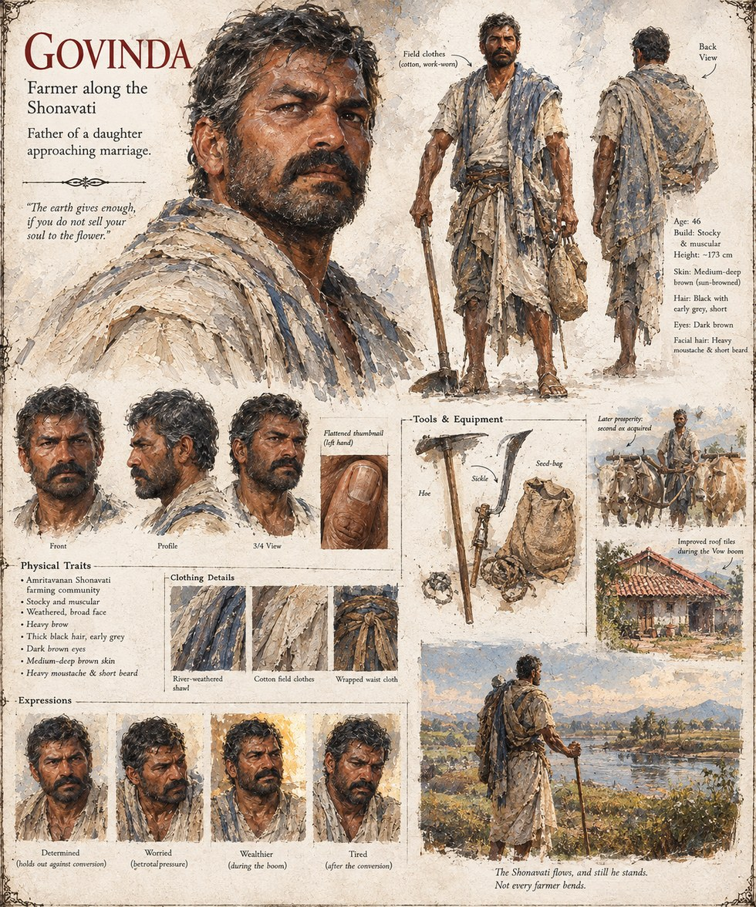

Govinda
Farmer Along the Shonavati · Father of a Daughter Nearing Marriage
A farmer along the Shonavati with a daughter approaching marriageable age, and so a dowry to consider. Govinda holds out against Vow-cultivation longer than most of his neighbors, then plows his own barley field under with his own hands rather than let a seed-broker's crew do it for him — a distinction that seems to matter more to him than to anyone watching.
“The earth gives enough, if you do not sell your soul to the flower.”
Appears in The Songs Never Mention the Cats